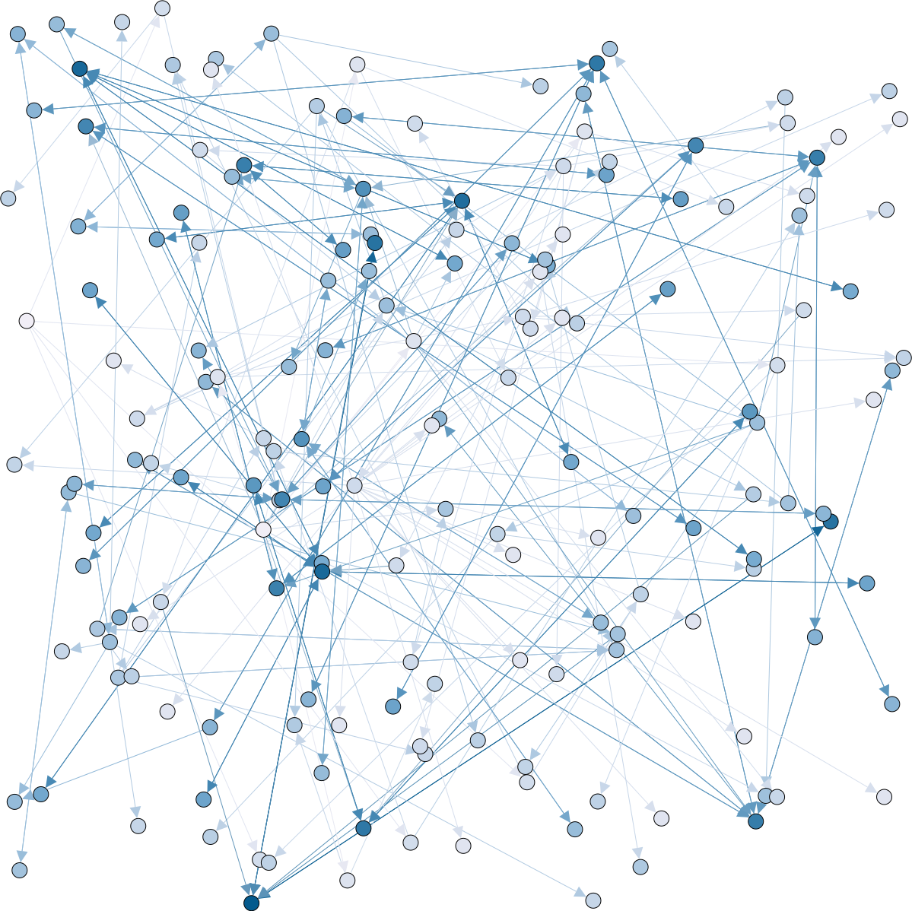
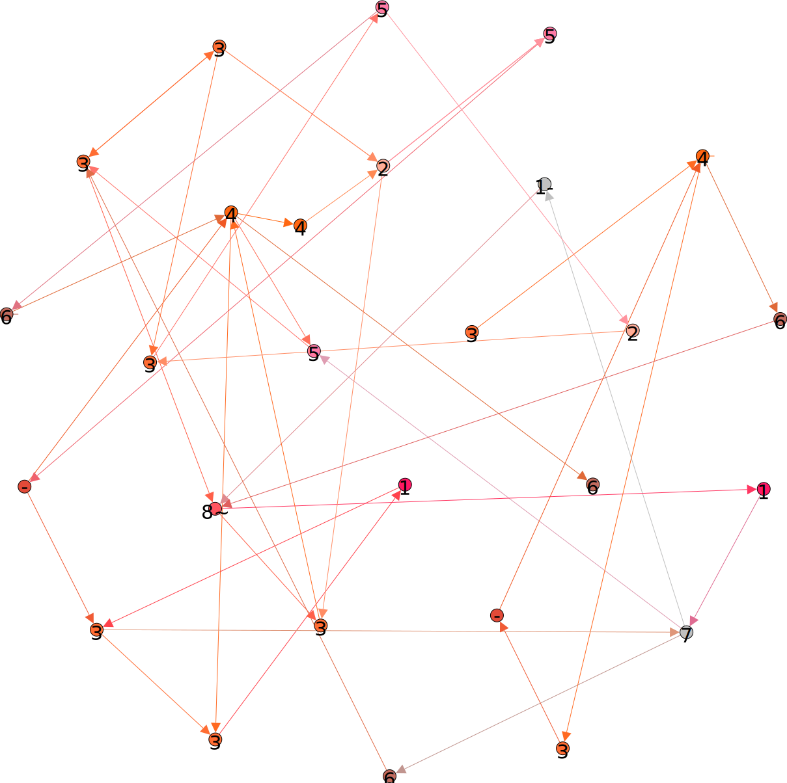

How I Explitaine To This Link My Pseudo Is Sick (We Love Sick) I Have an Music The Title Is raqoyap I Make This!
Or Visit My Blog
I Make A Movie Of Who Wants To Be A Millionaire (French) ::::
Millionaire Sick As MP4 Movie Maker Output
Millionaire Sick As x264 No Sound
i'm a big bird! :::
I Like/Love ImageMagick, I Presente The Usage
This Graph Represente already The Web Using By Gephi :::

And a Graph Bipartite Contain Page and Keyword :::
Here The Possible Musical Note As Markov Chain ::::

And If You Send Me In Encrypted Or Verify My Signature, My Public Key From My Private Key Address Website :::: Click Here!
For Contact Me On Tox :::: 437AA4198EEFAED3E890B522FB91710B0B2661D7E86E90456798C5E1BE206C2BAA5B8D2F55AB